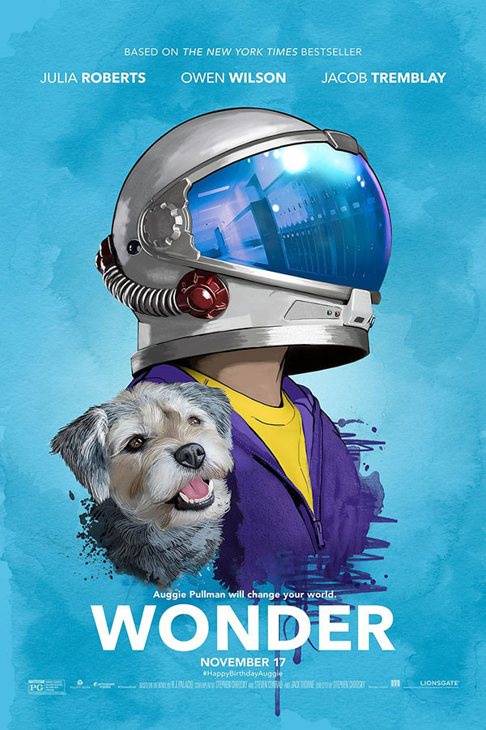
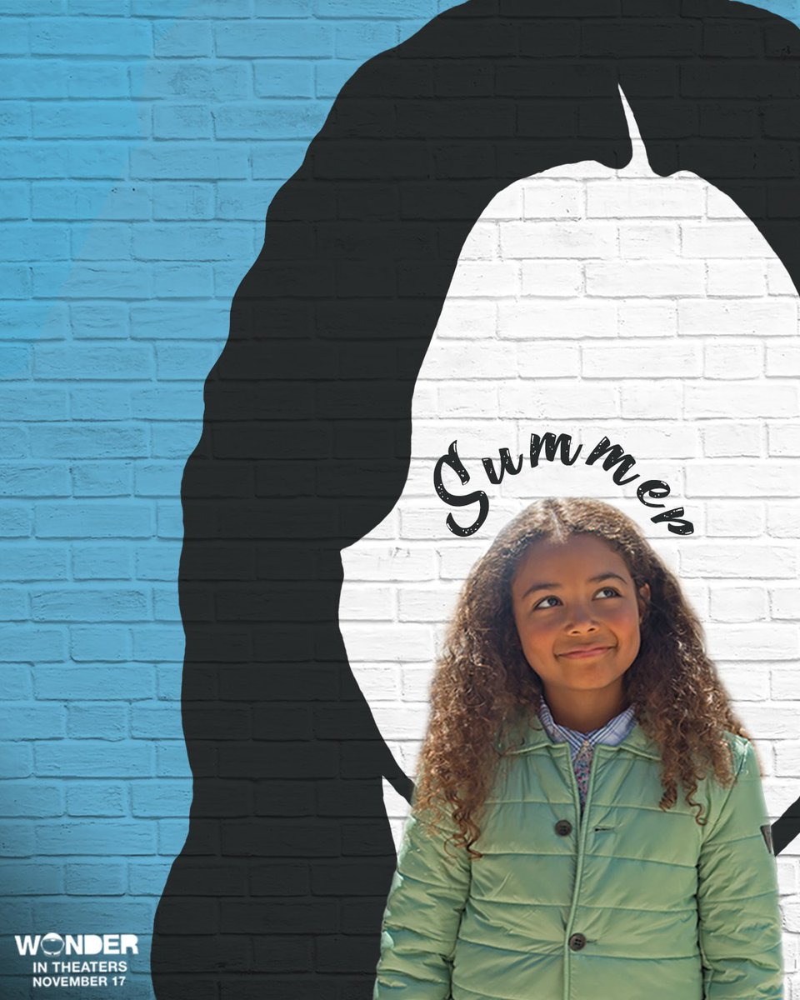

Stephen Chbosky é um escritor, roteirista e diretor de cinema norte-americano que ficou conhecido pelo livro "The Perks of Being a Wallflower" de 1999. Ele também escreveu o roteiro do filme Rent de 2005 e foi co-criador, produtor executivo e roteirista da série de TV da CBS Jericho, que foi ao ar em 2006
Auggie Pullman (Jacob Tremblay) é um garoto que nasceu com uma deformação facial, o que fez com que passasse por 27 cirurgias plásticas. Aos 10 anos, ele pela primeira vez frequentará uma escola regular, como qualquer outra criança. Lá, precisa lidar com a sensação constante de ser sempre observado e avaliado por todos à sua volta.
Na história, produzida em 2017, Auggie é um garoto de 10 anos que mora em Nova York e nasceu com uma rara deformidade facial médica, disostose mandibulofacial, passando por 27 cirurgias ao longo da vida.
Ele foi educado em casa, mas seus pais decidem que ele deve ir para uma escola quando chega na quinta série. A partir daí, são mostrados os conflitos vividos pelo garoto para ser aceito pela sociedade.

Isabel, a mãe de Auggie, deixa de lado a profissão de ilustradora de livros infantis, interrompe sua dissertação de mestrado e passa a se dedicar em tempo integral aos cuidados do filho, logo após seu nascimento.
São dias e noites de preocupação e dedicação intensas, vividas entre sua casa e o hospital, onde Auggie passou por vinte e sete cirurgias plásticas de reconstrução facial.
Visando protegê-lo, mas sem descuidar de seu futuro, lhe dá aulas em casa até os dez anos. Apesar de todo o cuidado, tem a coragem de convencer o marido e o próprio filho de que ele precisaria frequentar uma escola, pois necessitava aprender mais do que ela podia ensinar.
Com certeza, não se referindo somente ao conteúdo intelectual mas, sobretudo, ao aprendizado de vida que se fazia necessário, enfrentando o mundo que o aguardava.

Nate Pullman é um pai em Wonder. Ele é um homem de negócios muito rico que é o chefe do conselho escolar. Ele é marido de Isabel Pullman e pai de seus filhos, Auggie e Olívia. Ele é interpretado por Owen Wilson em Wonder.

Olivia Pullman é uma personagem principal em Worder. Ela é a irmã mais velha de August and Nate Pullman.
ela é uma estudante na Faulkner Hing School, onde conheceu Justin que se tornou seu namorado.No primeiro dia de aula, ela se afastou de Miranda e Ella, pois escolheram sair com as pupulares.

Summer Dawson é um personagem principal em Wonder.Ela estuda na Beecher Prep.
Foi lá que ela conheceu Auggie e se tornou uma de sua primeiras e melhores amigas, depois de sentar ao lado dele no almoço no primeiro dia, quando ninguem mais o faria,Summer vive com sua mãe, quando seu pai faleceu.

Jack Will revela-se ser um bom menino,apesar das primeiras boas impressões se apagarem por serem falsas.julian,não.ao longo da trama,vamos vendo suas marcas espostas como papéis despregadeos do bloco.A origem desses traços também está lá.
"Extraordinário" nos mostra que as marcas externas são esgotáveis,e nós nos acosttumamos a eles.Jack Will,ao narrar sua versão sobre os conflitos com Auggie,diz que no início achou estranho a cara do colega,mas depois se acostumoucom ela.É mais ou menos isso que ocorre na relação duradouras de todo mundo.

Os preconceitos do Sr.Browne são uma parte importante da classe dele. Todo mês,há um novo preconceito, sobre qual os alunos tem que escrever no final do mês.
Além dos preconceitos do Sr.Browne, seus alunos tem chance de oferecer alguns dos seus. Depois que o ano letivo terminar,eles podem enviar-lhe um cartão postal com um preconceito,que pode ser o seu próprio original ou de outro lugar,durante o verão.